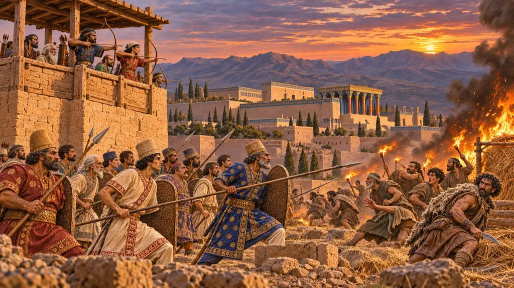
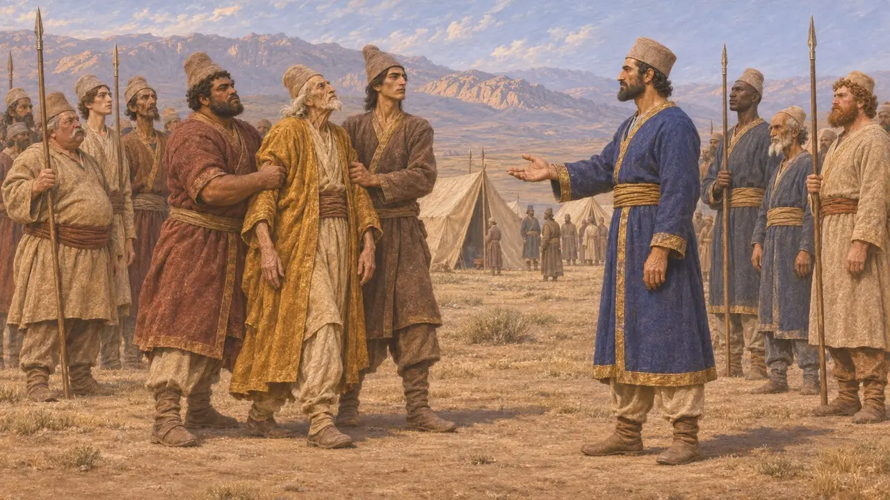
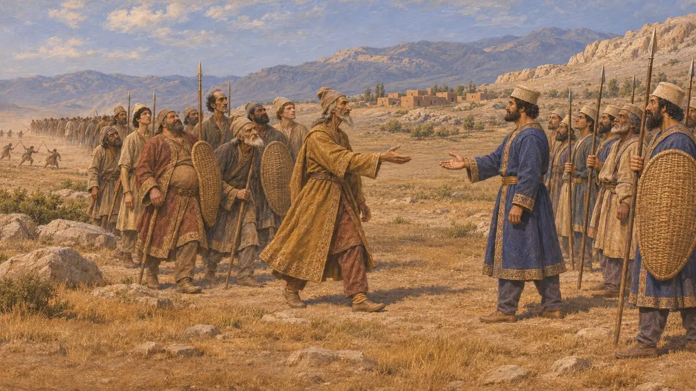
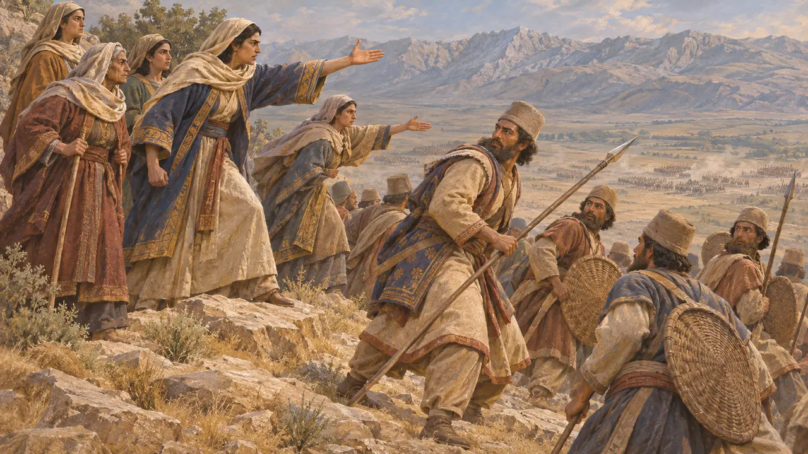
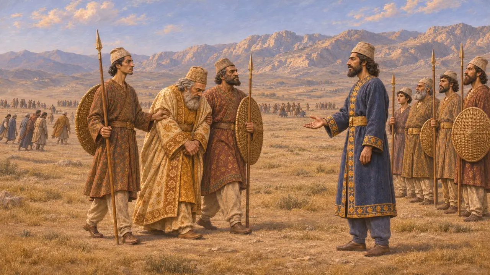
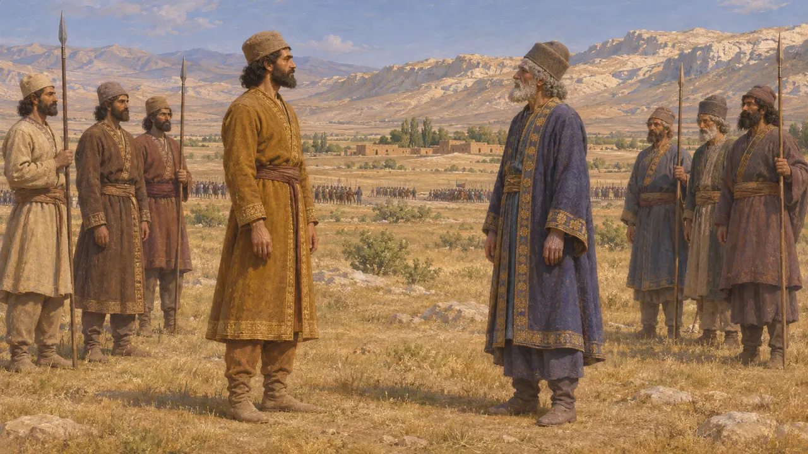

Enzyklopädie › Schlachten und Ereignisse

Die Schlacht von Pasargadae
Kyros’ Sieg über Astyages den Meder, wahrscheinlich bei Pasargadae in Persis, um 550 v. Chr.
Im Spiel: Level 1: Das Grab des Gründers
Diese Schlacht beendete den Krieg zwischen Kyros, dem König von Anschan, und Astyages, dem König der Meder. Eine babylonische Chronik berichtet, dass das eigene Heer des Astyages rebellierte und ihn Kyros auslieferte, der darauf die medische Hauptstadt Ekbatana plünderte. Griechische Autoren verlegen den letzten Kampf in die Nähe von Pasargadae, wo Kyros später seine Residenz errichtete.
Im Spiel: Das Spiel inszeniert den Abfall der Meder und die Frauen auf dem Hügel, wobei Astyages 550 v. Chr. lebendig gefangen genommen wird. Die Geschichte der Frauen stammt von Nikolaos und Plutarch, nicht von Herodot, und die Verwandtschaft von Kyros und Astyages beruht allein auf Herodot.

Was die babylonische Chronik berichtet
Zeitgenössisch belegtDie Nabonid-Chronik berichtet unter dem sechsten Jahr Nabonids (um 550 v. Chr.), dass Astyages sein Heer sammelte und gegen Kyros, den König von Anschan, zog. Sein Heer rebellierte, ergriff ihn und übergab ihn an Kyros. Kyros zog dann nach Ekbatana und brachte Silber, Gold und andere Güter nach Anschan. Die Chronik macht Astyages zum Angreifer und nennt kein Schlachtfeld.
Nabonidus Chronicle (ABC 7) ii 1-4

Harpagos und die abtrünnigen Meder
Antiker BerichtHerodot berichtet, Astyages habe, von den Göttern verblendet, sein Heer dem Harpagos übergeben, einem Adligen, den er einst grausam bestraft hatte. Als die Heere aufeinandertrafen, kämpften einige Meder, manche liefen zu den Persern über, und die meisten flohen absichtlich. Astyages ließ daraufhin die Magier, die ihn beraten hatten, pfählen, bewaffnete die in seiner Stadt verbliebenen Männer und wurde geschlagen und lebendig gefangen genommen. Das passt zum Bericht der Chronik über eine Meuterei.
Herodotus 1.127-128

Die Frauen auf dem Hügel
Spätere LegendeNikolaos von Damaskus erzählt, wohl nach Ktesias, von Kämpfen nahe Pasargadae, in denen die Perser einen Berg hinaufgetrieben wurden, wo ihre Mütter und Frauen sie beschämten, sodass sie umkehrten. Plutarch fügt hinzu, Kyros habe die Frauen belohnt: Sooft ein König die Stadt betrat, erhielt jede Frau ein Goldstück. Herodot erzählt die Geschichte nicht. Der Brauch mit dem Goldstück wirkt wie eine spätere Erklärung, da persische Könige vor Dareios keine eigenen Goldmünzen prägten.
Nicolaus of Damascus, FGrH 90 F66; Plutarch, Bravery of Women 5; Plutarch, Alexander 69

Wann und wo die Schlacht geschlagen wurde
UmstrittenDer Sippar-Zylinder des Nabonid besagt, dass Kyros in dessen drittem Jahr, etwa 553 v. Chr., das große medische Heer zerstreute und Astyages gefangen nahm. Die Chronik setzt die Gefangennahme ins sechste Jahr, etwa 550 v. Chr. Manche Historiker meinen, der Krieg habe von 553 v. Chr. bis 550 v. Chr. gedauert, andere, der Sippar-Text raffe die Ereignisse. Strabon berichtet, Kyros habe Pasargadae geehrt, weil er Astyages dort in der letzten Schlacht besiegt habe, doch keine persische Quelle bestätigt den Ort.
Nabonidus, Sippar cylinder; Strabo 15.3.8; P. Briant, From Cyrus to Alexander, 2002

Enkel oder Rivale
UmstrittenHerodot macht Kyros zum Sohn von Astyages' Tochter Mandane, sodass der Krieg zum Aufstand eines Enkels wird. Ktesias bestritt jede Blutsverwandtschaft zwischen den beiden Männern. In seinem eigenen Zylinder nennt Kyros nur seine Abstammung von den Königen von Anschan und beansprucht keine medische Ahnenreihe. Der Hinweis des Spiels behandelt die Verwandtschaft als Tatsache, doch sie beruht allein auf Herodot.
Herodotus 1.107-108; Ctesias, Persica (in Photius); Cyrus Cylinder
Quellen
- Nabonidus Chronicle (ABC 7) ii 1-4
- Herodotus 1.107-130
- Strabo 15.3.8
- Nicolaus of Damascus, FGrH 90 F66
- Plutarch, Bravery of Women 5
- P. Briant, From Cyrus to Alexander, 2002